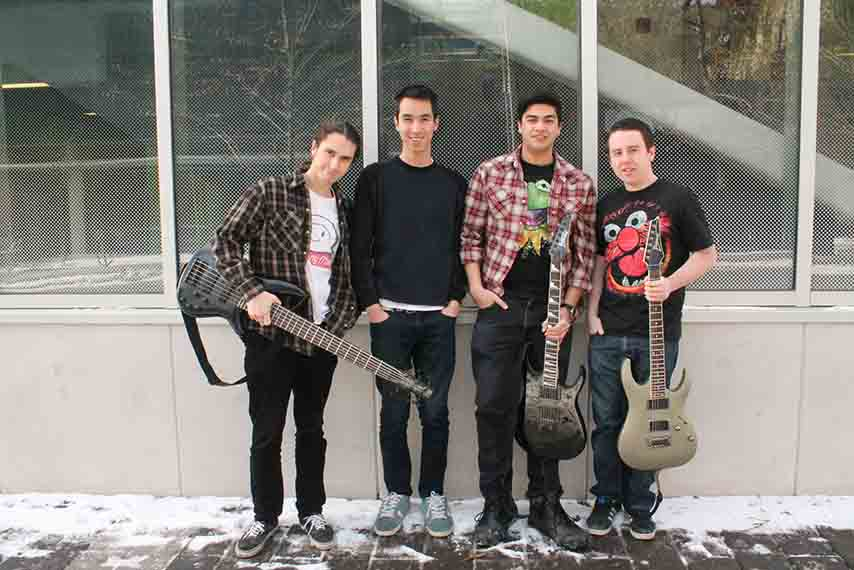
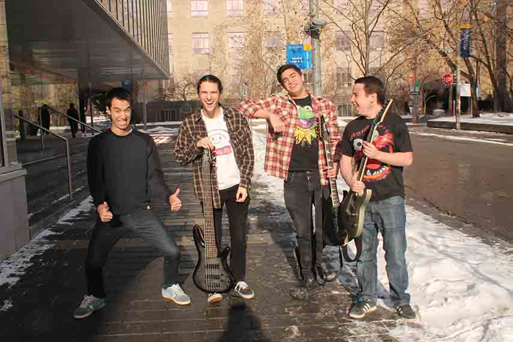

Spotlight: KOPANO

Article by Lauren Malyk
Photos by Alina Bykova
Uploaded on January 19, 2014
You’ve heard this story before: Four guys meet in high school. They goof around on their instruments and make a few Rage Against the Machine covers. When their school hosts another talent show, they round up the bros and make some magic.
But here’s the part you haven’t heard: These four 19-year-olds went from casual jamming to being an opening act for award-winning Canadian progressive metal band, Protest the Hero.
Kopano, meaning ‘united’ in Swahili, is the product of four best friends from Pickering, ON, sharing a love of music. The group fell together after canvassing for bandmates at their old high school. Lead guitarist and Ryerson business student Bryan Hayes met Trent history major Mike McGill in grade nine when searching for a bass guitar player.
They were joined by Daniel Moy on drums and keyboard, who is now studying software engineering at the University of Ontario Institute of Technology.
“One of us had to step up to become the vocalist, and that unfortunately had to be me,” says University of Toronto student and rhythm guitarist Adrian Lorenzana.
| |
Kopano owes their newfound fame to a chance encounter with a music promoter in Toronto, who later contacted the boys with the opportunity to play for an executive from Universal Records. The executive had Protest the Hero hold final auditions for their opening act, but Kopano didn't make the cut the first time.
"We saw that another still had open spots so we said 'Ok, let's try again'," says Hayes with a smile. "We did, and we got it."
"Backstage was weird," McGill pipes in. "We were walking around and it took me a couple times [by surprise] and I'd be like 'Oh, that was a member of Protest, just hanging out'."
Meanwhile, out in the audience, Kopano's fans and family, including McGill's 80-year-old grandfather, were there to support the band.
So long as no one dropped out of school, Kopano had their family's blessings to pursue music.
Their wallets didn't exactly allow for time in the studio, but they managed to buy some inexpensive and mediocre recording equipment available and try their hand at making an EP. Moy learned the ropes of production when it came to recording and mixing their tracks.
“It pretty much took us an unnecessarily long time of sitting in his basement for many hours getting frustrated,” says McGill. “But it was worth it.” By the end of the experience, Kopano’s EP ended up being about the average length of a pop record.
Moy doesn’t hold back his excitement. “Our music is free online!” he says cheerfully.
The bandmates are buried in their school books for now, but they always find time to round up the boys and make some magic.

back to spotlight